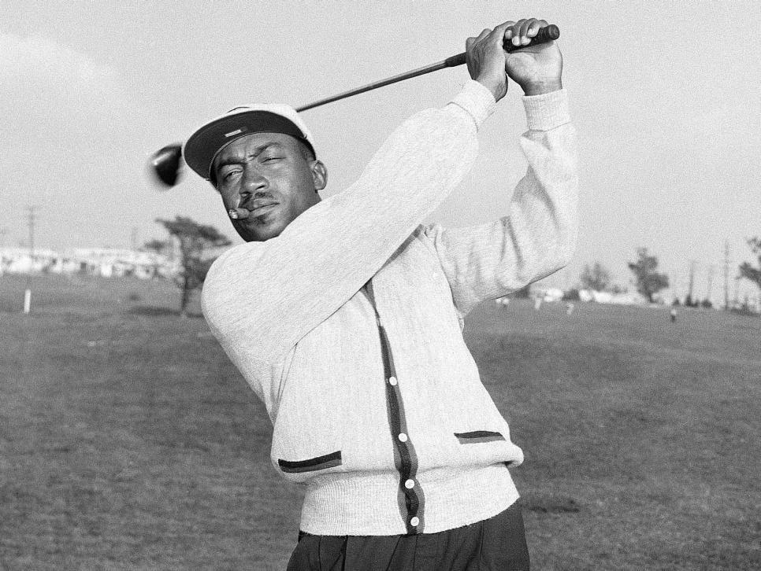
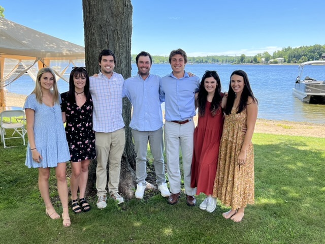

Our founder David Crouch grew up in Jacksonville, Florida in a family of five sibilings who spent all of their free time outdoors in nature or playing sports. Naturally, with the perfect combination of both, Dave and three of his sibilings gravitated towards the great sport of golf. Having an older brother play collegiate and now professional golf, Dave had the idea of starting a golf store with quality to compete with the likes of Titlist and other giant brands of the game but with two key ingredients to distinguish their brand: LESS expensive prices and MORE casual/fun.
Golf is the most beautiful and sacred game in mankind. A core element of golf that makes golf so special is the implementation of the handicap. To explain it simply; the handicap gives extra strokes off their score to a golfer who may not be as good as their opponent. This way, the start of the match will be as equal and nobody has to take it easy to keep a match competitive. Our morals revolve around this concept. 
Unforunately, for most of its existence, equality amongst their golfers was far from one of their priorities. Golf has been and still is today one of the most expensive sports to play. Back then, there were no black golfers allowed to play on the PGA Tour under any circumstances. It was not until only 1952, fifty years ago, that the seven committee passed a vote to let black golfers compete. Today, we are not dealing with the issue of race, but with the financial burden it costs to enjoy golf. Golf is growing faster than most sports in America, yet as the demand goes up, prices have surged into unrealistic heights to spend on a sport that everybody should be able to enjoy equally. This leads to our mission: Inspiring the future generation to spread the game of golf to friends of all backgrounds.
Like our mission statement interprets, we are providing clothes, equipment, and golf tools for people of any age, gender, race, political background, etc. With that being said, the demographic of our anticipated target audience will be geared towards products that gravitate towards the younger generations of golfers. Our thought process behind this relies on (1)the fact that established golfers are not going to want to change their brand they have used for twenty+ years. Leading to the second point, we want to establish a brand revolved around quality that will last our generation of golfers a lifetime. With the help of his sister Caroline, Dave believes that FiveKidsGolf will be able to present a more comfortable and fashionable selection of clothing to eventually dominate the women's golf clothing department.